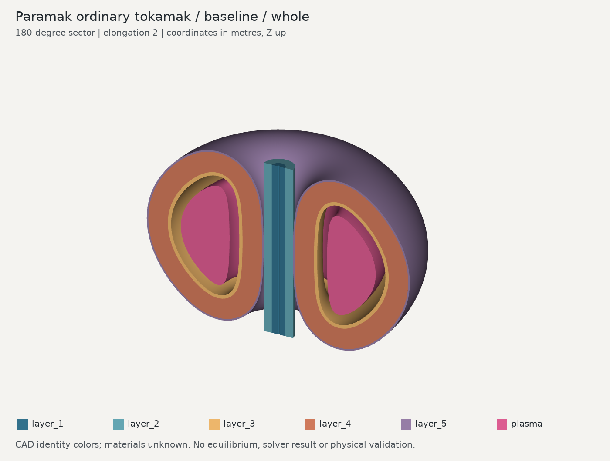
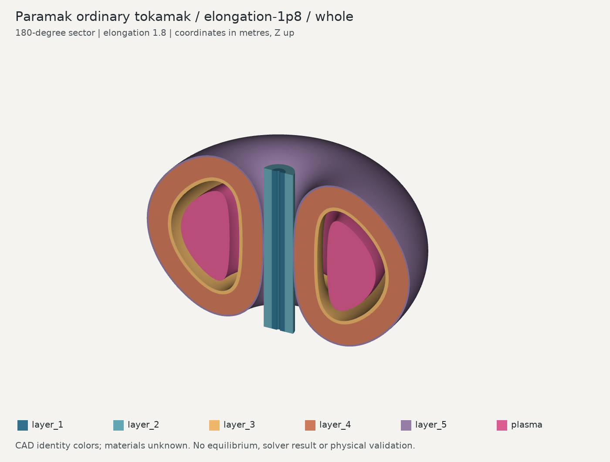

Elongation changes from 2.0 to 1.8. These are two discrete accepted cases, not a verified continuous design interval.
NOT A SIMULATION. Materials, equilibrium, physical feasibility and reactor performance have not been assessed.


| Component | Baseline | Edit |
|---|---|---|
| layer_1 | 2.403318 | 2.261947 |
| layer_2 | 10.414380 | 9.801769 |
| layer_3 | 50.538260 | 47.832002 |
| layer_4 | 372.009221 | 356.172019 |
| layer_5 | 36.323004 | 35.034216 |
| plasma | 184.126157 | 165.713541 |
Adaptive Gauss–Kronrod CAD volume measurements. Fourteen recorded geometry/display checks pass for each case. Source geometry uses centimetres; display coordinates use metres, Z-up. See the JSON evidence for tolerances and the corrected STEP unit issue.
Source: Fusion Energy and Paramak contributors · MIT license retained in NOTICE.txt.